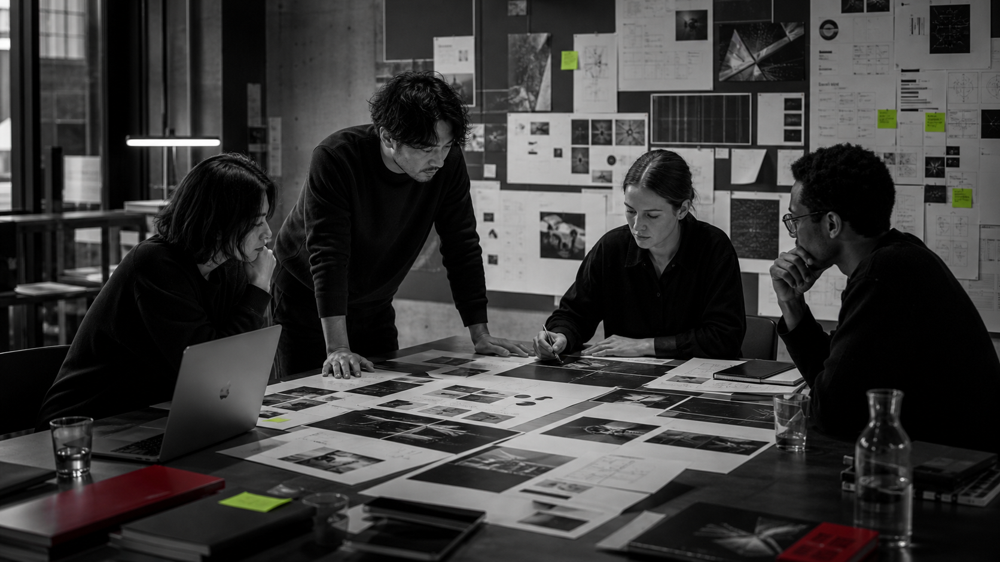
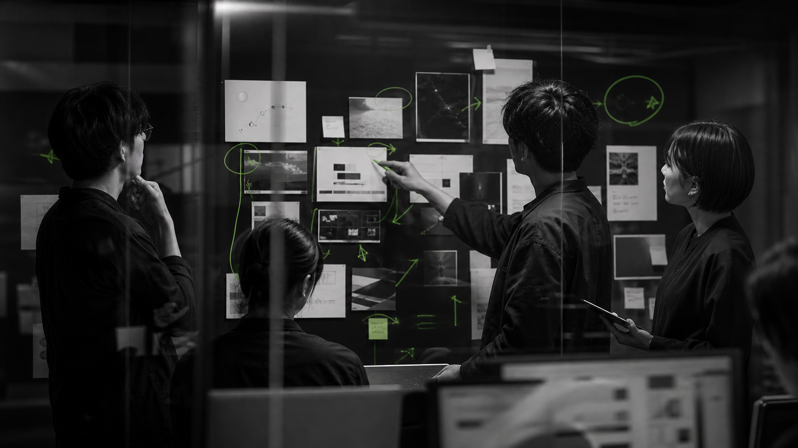

曖昧な問いを、使える方向性へ変える。

About
Vision, People, Company.
戦略と実装を切り離さず、アイデア、体験、成長の仕組みを横断して事業を前に進める会社です。
01 / Vision
Business should be felt, used, and continuously improved.
私たちは、事業づくりをもっと接続されたものにしたいと考えています。ブランドはプロダクトから、ウェブサイトは運用から、AIは人の働き方から切り離されるべきではありません。
見え方、使われ方、続いていく仕組みまで含めて、事業が現実の中で動く状態をつくります。
顧客、チーム、パートナーが実際に触れる体験を大切にする。
公開後も学び続け、改善できる形でつくる。

02 / Founder
Founder-led, system-minded, execution-focused.
創業者は、事業設計、デジタルプロダクト、ブランド体験、AI導入、成長支援を横断してプロジェクトを見ます。役割は指示することだけではなく、別々の場所にある問いをつなぐことです。
Cascade Alliance の創業者は Sho Ito。グループのブランド・プロダクト・ウェブ・成長支援を横断し、戦略と実装をつなぎます。
03 / Company Info
Company Information
- Company
- Cascade Alliance sp. z o.o.
- 登記住所
- ul. Stefana Batorego 18/108, 02-591 Warszawa, Poland
- 登記番号
- KRS 0001170168
- VAT (EU)
- PL7011257404
- Focus
- ブランド、デジタルプロダクト／アプリ、ウェブ、マーケティング・成長支援（複数の事業を束ねる）
- Language
- 英語を主軸に、日本語にも対応
- Contact
- contact@cascade-alliance.com